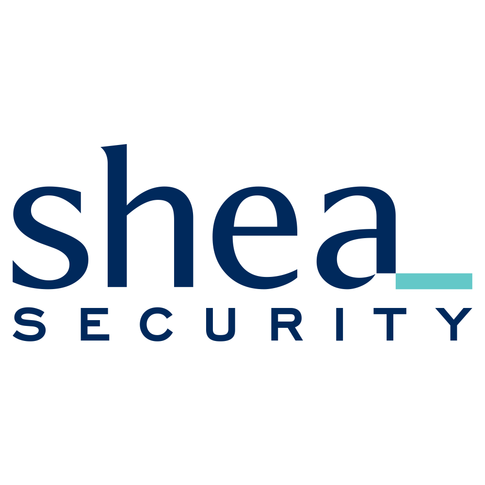

:office: Level 4, 152 Elizabeth Street, Melbourne, VIC, 3000
:flags: Australian owned :flags: Private company
:small_blue_diamond: Visit site
Based in Melbourne and founded in 2018. Our work involves testing the security of computer systems, applications and networks. Additionally, we provide education and training to software developers and IT professionals based on our testing and research. We have considerable experience in penetration testing (pentesting) for some of Australia’s most widely known companies. This includes working closely with security engineers and managers as they continuously adjust and improve the security of their systems.